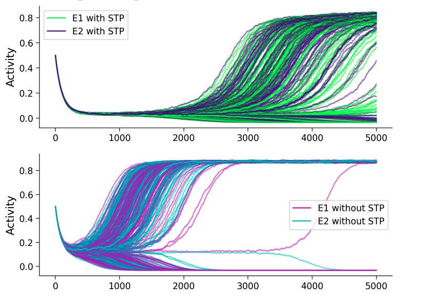
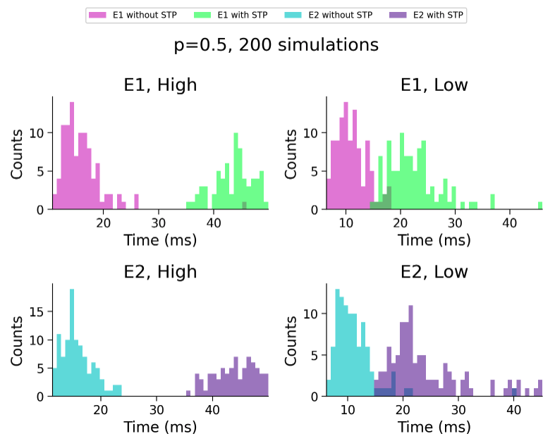

This project analysed the role of short term plasticity on the rapidity and accuracy of decision-making processes.
We used a mean field dynamical systems model with differential equations from the Wilson-Cowan setup of excitatory and inhibitory neural populations.
Using some simplifications we were able to analytically calculate the phase space of the dynamics and analyse the role of short term plasticity parameters.
The results of the project demonstrated that short term plasticity has direct implications for decision making, and therefore may be a key element of atypical decision-making processes in neurological disorders such as psychosis.
